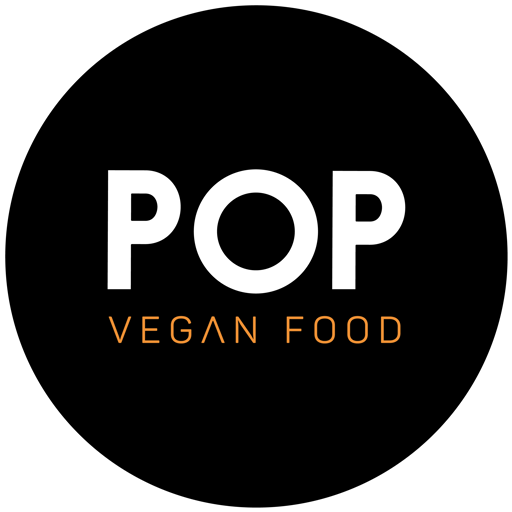

POP TV · conectar esta tela
······
No painel do POP TV, clique em
+ Adicionar tela
e digite o código acima.
O código vale por 10 minutos.
Democratizando a
comida vegana
Aguardando programação…
Pressione OK para tela cheia